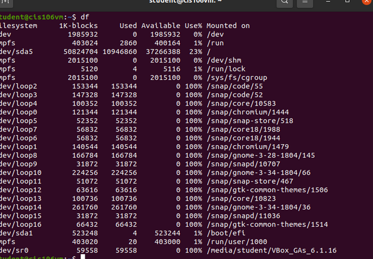
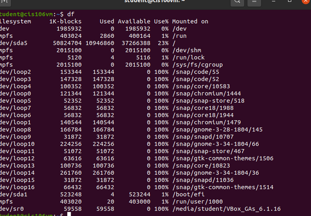
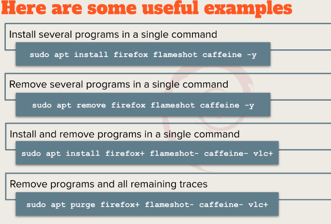
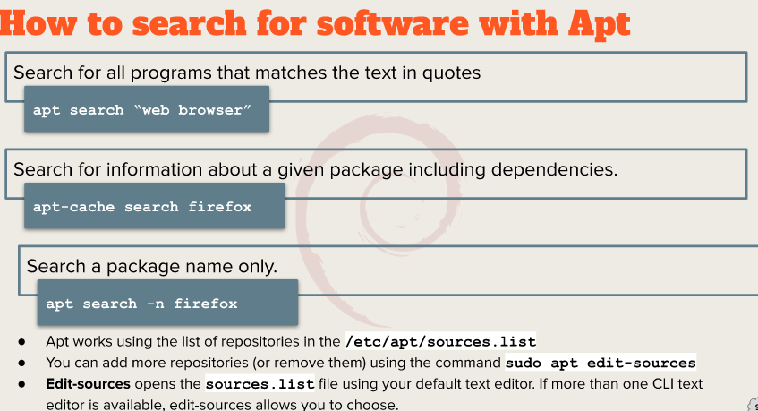
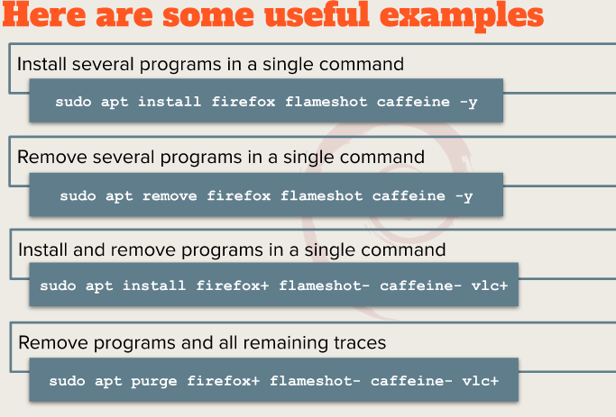
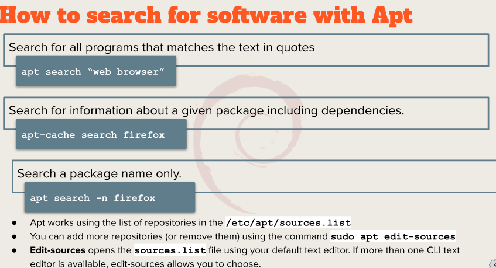

Week report 3
Summery of presentation
a. Exploring Desktop Environments
bulleted list of different desktop environments
- LXQT
- Deepin
- Pantheon
- Raspberry Pi OS
Definitions for the following terms:
- GUI: A graphical user interface is a form of user interface that allows users to communicate with the electronic systems via icons,windows and various other visual elements.
- DE:In computing ,the desktop is an embodiment of the desktop parabole made of bundle o programs running on top of a computer operating system that shares a common GUI ,sometimes described as a graphical shell.
Bulleted list of the common elements of a desktop environment
GNOME
KDE
b. The bash Shell
What is a shell?
A shell is a layer of computer program which exposes an operating system's services to a human user or others.
List different shells
- Tcsh Shell
- Csh Shell
- Ksh Shell
- Zsh shell
- Fish shell
List some bash shortcuts
- Ctrl+A: Go to the beginning of the line.
- Ctrl+E: Go to the end of the line.
- Alt+B: Go left (back) one word.
- Ctrl+B: Go left (back) one character.
- Alt+F: Go right (forward) one word.
- Ctrl+F: Go right (forward) one character.
List basic commands and their usage
- date: displays the current time and date
- cl: calender of the current month
- df: the current amount of free space on our disk drives
- free: the amount of free memory
- uname: information about your system
- clear: clear the screen
 


c. Managing Software
Command for updating ubuntu
sudo apt update
Command for installing software
sudo apt install app-name -y
Command for removing software
sudo apt remove app- name -vlc+
Command for searching for software
apt search "app name"
Definition of the following terms:
- Package : archives that contains binaries of software,files and information about dependencies.
- Library: code can be used more than one function or program
- Repository : huge collection available for download
The screenshot of how to update ubuntu with its explanation
 


